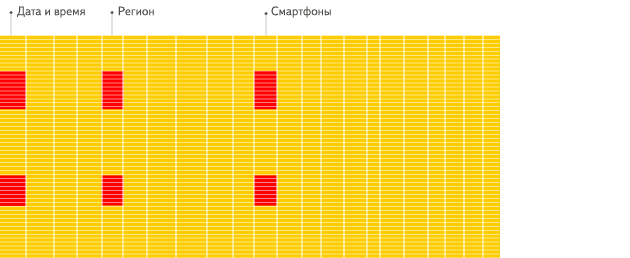

ClickHouse Meetup in Nizhny Novgorod
ClickHouse Meetup
in Nizhny Novgorod
What is ClickHouse?
ClickHouse — distributed analytical column-oriented DBMS.
Why column-oriented?
Why column-oriented?
How row-oriented systems work:

Why column-oriented?
How column-oriented systems work:

History
Yandex.Metrica — web analytics service.
In Russia — first, in the world — second.

~25 billion events arrive daily.
Must show reports in real time.
Metrica 2.0

Why ClickHouse?
1. Speed.
2. Flexibility.
3. Scalability.
4. Cost.
ClickHouse at Yandex
We managed to make the system relatively user-friendly.
From the very beginning we had detailed documentation.
Within a couple of years, ClickHouse spread to other Yandex departments.
Mail, Market, Direct, Webmaster, AdFox, Infrastructure, Business Analytics...
Open-source
Then we decided — ClickHouse is too good a system for us to keep it to ourselves.
To make it more fun, we need to get people outside hooked on ClickHouse, let them enjoy it. We decided to go open-source.
Main Metrica Cluster
- >23 trillion rows
- 500 servers
- data processing speed up to two terabytes per second
* If you want to try ClickHouse, one server is enough.
ClickHouse Adoption
Hundreds of companies in Russia and nearby
Yandex, Mail.ru, Rambler, SKB Kontur, SMI2…
Dozens of companies in Europe, USA, China
Cloudflare, Wikimedia, Lifestreet, Vertamedia, Carto, Nvidia, Infinidat…

How do we analyze over O(100B) DNS requests daily.
"ClickHouse enables us and our customers to explore the the dataset in real time to get operational insights. Due to many of the optimizations built into ClickHouse we are able to store the data for a long time allowing us to look events is perspective and at historical trends."
Wikimedia.org

"clickhouse is a columnar datastore that we are using as an aid to run complex SQL queries on the edit data "lake" that we have as a result of the edit reconstruction project. It is similar to Druid but faster for complex queries."
https://phabricator.wikimedia.org/T150343
Unusual ClickHouse Use Cases
Search engine and analytics for Bitcoin transactions:
https://blockchair.com/
"Pretty large tables are running, only one server is used and everything works very quickly — with any filters and sorting, everything is almost instantaneous."
Bioinformatics - evolutionary genetics:
https://github.com/msestak/FindOrigin
"We are exploring evolution of novel genes in genomes because if seems that genomes are far from being static as previously believed and what actually happens is that new genes are constantly being added and old genes are lost."
Significant ClickHouse Limitations
Limited JOIN support
No UPDATE, DELETE
Weak SQL standard compatibility
Interfaces
HTTP REST
clickhouse-client
JDBC (production), ODBC (beta)
Python, PHP, Perl, Go,
Node.js, Ruby, C++, .NET, Scala, R, Julia, Rust
Integrations with Data Visualization Systems
Tabix (tabix.io) — developed specifically for ClickHouse.
 And more:
And more:
Grafana, Redash, Apache Zeppelin…